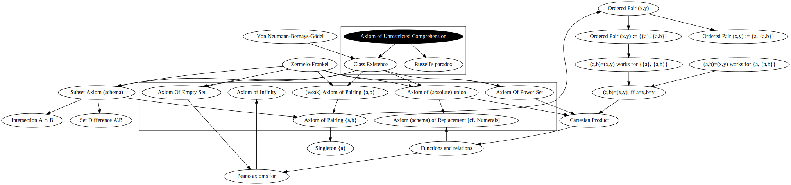

We next consider a statement that is intuitive, yet provably false: the Axiom Schema of (Unrestricted) Comprehension. (It's so intuitive that Cantor used it, without comment, in his initial buildout of set theory. The problem wasn't caught for around a decade.)
| Axiom of Unrestricted Comprehension, Zermelo-Frankel, Classical Logic |
|---|
| (A φ:Set → TruthValues)(EB ∈ Set)(Ax ∈ Set)(x ∈ B ⇔ φ(x)) |
| Von Neumann-Bernays-Gödel, class existence, Classical Logic |
| (A φ:Set → TruthValues)(EB ∈ Class)(Ax ∈ Set)(x ∈ B ⇔ φ(x)) |
Here, we interpret the leading quantifier as "for all φ of type Set → TruthValues", i.e. we are treating Set → TruthValues as a domain of discouse.
The terms used in the truth-valued expression φ, taking a set parameter, are suppressed. φ depends on no other variables. To convert the above second-order axiom to a first order axiom schema, we eliminate the leading quantifier which ranges over truth-valued expressions of type Set → TruthValues , and instead say that any φ:Set → TruthValues has a first-order axiom instance. This downgrade from second order to first order logic does lose some formal inference strength, but one of the specific objectives of Zermelo-Frankel set theory is to only use first-order logic for its axioms.
| Inference Rule | Proposition | Rationale | |
|---|---|---|---|
| 0. | Axiom of Unrestricted Comprehension | Hypothesis | |
| 1. | (EB ∈ Set)(Ax ∈ Set)(x ∈ B ⇔ ~(x ∈ x)) | Universal instantiation on Axiom of Unrestricted Comprehension | |
| 2. | (R ∈ Set) & (Ax ∈ Set)((x ∈ R) ⇔ ~(x ∈ x)) | Existential instantiation on (1) | |
| 3. | R ∈ Set | Conjunction elimination on (2) | |
| 4. | (Ax ∈ Set)((x ∈ R) ⇔ ~(x ∈ x)) | Conjunction elimination on (2) | |
| 5. | (R ∈ R) ⇔ ~(R ∈ R) | Universal instantiation [R/x] on (4) | |
| Could use principle of (bi/tri/tetra)valence and proof by cases here to avoid using atypical notation, but that's far more verbose | |||
| 6. | ((R ∈ R) ⇒ ~(R ∈ R)) & (~(R ∈ R) ⇒ (R ∈ R)) | definition of ⇔ on (5) | |
| 7. | (R ∈ R) ⇒ ~(R ∈ R) | Conjunction elimination on (6) | |
| 8. | ~(R ∈ R) | Proof by contradiction on (7) | |
| 9. | (R ∈ R) ↦ false | Intended interpretation of ↦ on (8) | |
| 10. | false ⇔ ~false | [false/(R ∈ R)] on (5) by (9) | |
| 11. | false ⇔ true | evaluate ~false in (10) | |
| 12. | false | evaluate (11) | |
| 13. | Axiom of Unrestricted Comprehension ├ false | syntactical inference introduction on (0),(12) | |
| 14. | ~(Axiom of Unrestricted Comprehension ↦ true) | modus tollens on (13) | |
| Classical Logic | |||
| 14a. | ~(Axiom of Unrestricted Comprehension) | modus tollens on (13) |
Unfortunately, φ := x ∉ x instantiates Russell's Paradox. The corresponding intended mathematical collection, is R := { x : x ∉ x }.
This proof only applies to domains of discourse that are legal for both sides of ∈. So we have no problem for ur-elements or (proper) classes.
We explicitly define the mathematical subcollection relation ⊆:
| Typical | |
|---|---|
| (Ax ∈ Set)(x ∈ A ⇒ x ∈ B) & (Au ∈ Ur)(u ∈ A ⇒ u ∈ B) | |
| Alternate, to make non-classical logics act classical | |
| (Ax ∈ Set)((x ∈ A ↦ true) ⇒ (x ∈ B ↦ true)) & (Au ∈ Ur)((u ∈ A ↦ true) ⇒ (u ∈ B ↦ true)) | |
| (failed) Alternate, to make Belnap's four-valued logic act like the others | |
| (Ax ∈ Set)((x ∈ A ⇒ x ∈ B) & ~((x ∈ A ↦ unknown) & (x ∈ B ↦ contradiction)) & ~((x ∈ A ↦ contradiction) & (x ∈ B ↦ unknown))) & | |
| Von Neumann-Bernays-Gödel with ur-elements, Classical logic | |||
|---|---|---|---|
| Inference Rule | Proposition | Rationale | |
| 1. | A ⊆ B | Given | |
| 2. | B ⊆ A | Given | |
| 3. | (Ax ∈ Set)(x ∈ A ⇒ x ∈ B) | Conjunction elimination on definition of ⊆, on (1) | |
| 3u. | (Au ∈ Ur)(u ∈ A ⇒ u ∈ B) | Conjunction elimination on definition of ⊆, on (1) | |
| 4. | (Ax ∈ Set)(x ∈ B ⇒ x ∈ A) | Conjunction elimination on definition of ⊆, on (2) | |
| 4u. | (Au ∈ Ur)(u ∈ B ⇒ u ∈ A) | Conjunction elimination on definition of ⊆, on (2) | |
| 5. | (a1 ∈ Set) & (a1 ∈ A ⇒ a1 ∈ B) | Universal instantiation on (3) | |
| 6. | a1 ∈ Set | Conjunction elimination on (5) | |
| 7. | a1 ∈ A ⇒ a1 ∈ B | Conjunction elimination on (5) | |
| 8. | a1 ∈ B ⇒ a1 ∈ A | Universal instantiation on (4) | |
| 9. | a1 ∈ A ⇔ a1 ∈ B | Definition of ⇔, (7) and (8) | |
| 10. | (Ax ∈ Set)(x ∈ A ⇔ x ∈ B) | Universal instantiation on (9) | |
| The same rationales work when starting from (3u) and (4u), leading to | |||
| 10u. | (Au ∈ Ur)(u ∈ A ⇔ u ∈ B) | ||
| 11. | (Ax ∈ Ur)(x ∈ A ⇔ x ∈ B) & (Au ∈ Ur)(u ∈ A ⇔ u ∈ B) | Conjunction introduction, (10) and (10u) | |
| 12. | A=B | Definition of equality (Zermelo-Frankel uses axiom of extenstionality here) | |
| other direction is immediate by simultaneous substitution justified by A=B | |||
| A ⊆ B & B ⊆ A ⟛ A=B | |||
| Non-classical truth-value logics logics use the alternate definition, but the above steps only reach | |||
| A ⊆ B & B ⊆ A ├ (x ∈ A ↦ true A ⟛ x ∈ B ↦ true) | |||
| The principle of bivalence for ... ↦ true allows reaching | |||
| A ⊆ B & B ⊆ A ├ (x ∈ A ↦ true A ⇔ x ∈ B ↦ true) | |||
The set theories without ur-elements, omit the ur-elements clause, both in the definition of ⊆ and the inference of equality from mutual subset relations.
A pragmatic difficulty with non-classical truth values, is that we want the subset A ⊆ B relation to whitelist sets and ur-elements that are not in A. Classical logic does this, with the principle of explosion. The failed alternate still breaks for Kleene's weak three-valued logic (as does the typical definition), when faced with a term t0 for which t0 ∈ A ↦ unknown. The working alternate, relies on the principle of trivalence/tetravalence making the truth values of the various ... ↦ true statements only have the classical logic truth values true and false.
The calculation that A ⊆ B,B ⊆ A ├ A=B, fails for all of the non-classical logics. We cannot rule out the existence of a term t0 such that t0 ∈ A and t0 ∈ B evaluate to distinct not-true truth values, without additional premises. The adaptation to the other set theories we are considering, is mechanical.
Arguably, one could catalog set theories by their choice of weaker versions of the provably false Unrestricted Comprehension, to syntactically disallow Russell's Paradox. We already saw how Von Neumann-Bernays-Gödel modifies this. We'll start with the weakest option: "A predicate applied to a mathematical collection's elements, defines a mathematical subcollection in the same domain of discourse". (We don't yet have the terminology, to state the more powerful options.)
| Subset Axiom (schema) | ||
|---|---|---|
| Classical logic | ||
| Zermelo-Frankel | Axiom (schema) | (A φ:Set → TruthValues)(AA ∈ Set)(EB ∈ Set)(Ax ∈ Set)(x ∈ B ⇔ (x ∈ A & φ(x))) |
| Von Neumann-Bernays-Gödel | provable from class existence | (A φ:Set → TruthValues)(AA ∈ Class)(EB ∈ Class)(Ax ∈ Set)(x ∈ B ⇔ (x ∈ A & φ(x))) |
| Zermelo-Frankel with ur-elements | Axiom (schema) | (A φ:Set → TruthValues)(A ψ:Ur → TruthValues)(AA ∈ Set)(EB ∈ Set)[(Ax ∈ Set)(x ∈ B ⇔ (x ∈ A & φ(x))) & (Au ∈ Ur)(u ∈ B ⇔ (u ∈ A & ψ(u)))] |
| Von Neumann-Bernays-Gödel with ur-elements | provable from class existence | (A φ:Set → TruthValues)(A ψ:Ur → TruthValues)(AA ∈ Class)(EB ∈ Class)[(Ax ∈ Set)(x ∈ B ⇔ (x ∈ A & φ(x))) & (Au ∈ Ur)(u ∈ B ⇔ (u ∈ A & ψ(u)))] |
| Kleene strong, Kleene weak, Lisp/Prolog, Franci, Belnap | ||
| Zermelo-Frankel | Axiom (schema) | (A φ:Set → TruthValues)(AA ∈ Set)(EB ∈ Set)(Ax ∈ Set)(Truth(x ∈ B)=Truth(x ∈ A & φ(x))) |
| Von Neumann-Bernays-Gödel | provable from class existence | (A φ:Set → TruthValues)(AA ∈ Class)(EB ∈ Class)(Ax ∈ Set)(Truth(x ∈ B)=Truth(x ∈ A & φ(x))) |
| Zermelo-Frankel with ur-elements | Axiom (schema) | (A φ:Set → TruthValues)(A ψ:Ur → TruthValues)(AA ∈ Set)(EB ∈ Set)[(Ax ∈ Set)(Truth(x ∈ B)=Truth(x ∈ A & φ(x))) & (Au ∈ Ur)(Truth(u ∈ B)=Truth(u ∈ A & ψ(u)))] |
| Von Neumann-Bernays-Gödel with ur-elements | provable from class existence | (A φ:Set → TruthValues)(A ψ:Ur → TruthValues)(AA ∈ Class)(EB ∈ Class)[(Ax ∈ Set)(Truth(x ∈ B)=Truth(x ∈ A & φ(x))) & (Au ∈ Ur)(Truth(u ∈ B)=Truth(u ∈ A & ψ(u)))] |
The same techniques for interpreting φ and ψ are used here, as in the failed Axiom of Unrestricted Comprehension. (In particular, the downgrade procedure from the above second-order logic axiom, to the first-order axiom schema, is closely comparable.) Alternate names include: axiom schema of separation, axiom schema of specification, or axiom schema of restricted comprehension. The terminology axiom schema of comprehension is used inconsistently in the literature; different authors interpret it as either axiom schema of restricted comprehension, or the failed axiom schema of unrestricted comprehension.
As with the definition of equality =, the non-classical logics are using the truth-value equality = rewrite to avoid the never-true ⇔ cases.
The subset axiom schema does require pre-existing mathematical collections to feed into it. So we will need even more axioms for Zermelo-Frankel set theory.
We can view the subset axiom (schema) as defining a Subsetφ:Class → Class and Subsetφ:Set → Set. In particular, we have
Subsetφ(Subsetφ(A))=Subsetφ(A)
Abusing terminology yet to be defined, we say evaluating the subset axiom (schema) is idempotent. If we further have, for a given predicate φ (and ψ, for the mixed set and ur-element case),
Subsetφ(A)=Subsetφ(B)
then that choice of φ (and ψ, if relevant) actually defines a set.
A mathematical collection that contains no elements whatsoever, is physically very reasonable. We reserve the notation ∅ for this mathematical collection.
| Axiom of Empty Set | ||
|---|---|---|
| Zermelo-Frankel | Axiom | (Ey ∈ Set)(Ax ∈ Set)(~(x ∈ y)) |
| Von Neumann-Bernays-Gödel | provable from class existence | (Ey ∈ Class)(Ax ∈ Set)(~(x ∈ y)) |
| Zermelo-Frankel with ur-elements | Axiom | (Ey ∈ Set)[(Ax ∈ Set)(~(x ∈ y)) & (Au ∈ Ur)(~(u ∈ y))] |
| Von Neumann-Bernays-Gödel with ur-elements | provable from class existence | (Ey ∈ Class)[(Ax ∈ Set)(~(x ∈ y)) & (Au ∈ Ur)(~(u ∈ y))] |
For the Von Neumann-Bernays-Gödel set theories, we substitute the constant false predicate on the relevant domain(s) of discourse, into the class existence axiom. It is a mechanical exercise that two classes that both are described this way, are equal regardless of choice of the logics we are considering, or whether ⇔ or truth-value = is used to define class equality. So the empty class ∅ is actually an empty set.
For the Zermelo-Frankel set theories, we take what was proven for the corresponding Von Neumann-Bernays-Gödel set theory, as an axiom. [This is not remotely close to the historical origin.] Again, it is a mechanical exercise to prove that two sets that both are described by the empty set axiom, are equal.
The corresponding explicit enumeration notation for ∅, is {}.
The subset axiom (schema) allows us to define the intersection, and set difference, of two mathematical collections:
A ∩ B := {x ∈ A: x ∈ B}
A\B := {x ∈ A: x ∉ B}
An alternate notation for set difference in the literature, A-B, conflicts with the pointwise usage in both analysis, and abstract algebra.
In the set builder notation, above, the mathematical collection that is the source for the subset axiom (schema) is on the left of :; the predicate that the subset axiom (schema) is instantiated with, is on the right of :. The universal quantification (Ax ∈ A), is suppressed. The corresponding domain of discourse is read off of the domains of discourse for A and B.
The following are mechanical exercises for mathematical collections A, B. Unless stated otherwise, they hold for all of the logics we are considering.
| Arithmetic table for A ∩ B and A\B | ||
|---|---|---|
| A ∩ B = | B ∩ A | Proof uses substitution commutativity of &: fails Lisp/Prolog |
| x ∈ A ∩ B ⟛ | x ∈ B ∩ A | But this only uses syntactical commutativity of &, so works for Lisp/Prolog |
| A ∩ B ⊆ | A | |
| A ∩ B ⊆ | B | |
| A\B ⊆ | A | |
| ∅ ∩ B = | ∅ | |
| A ∩ ∅ = | ∅ | |
| ∅\B = | ∅ | |
| A\∅ = | A | |
| x ∉ A ∩ B, x ∈ A ├ | x ∉ B | modus ponendo tollens for ∩ |
| ∅ = A ∩ B, x ∈ A ├ | x ∉ B | modus ponendo tollens for ∩ |
| Inference Rule | Proposition | Rationale | |
|---|---|---|---|
| 1. | y ∈ B ⟛ y ∈ C | Given | |
| 2. | x ∈ A ∩ B | Hypothesis | |
| 3. | x ∈ A & x ∈ B | Definition of ∩ on (1) | |
| 4. | x ∈ A | Conjunction eliminination on (3) | |
| 5. | x ∈ B | Conjunction eliminination on (3) | |
| 6. | x ∈ C | modus ponens for ⟛, (2) and (5) | |
| 7. | x ∈ A & x ∈ C | Conjunction introduction, (4) and (6) | |
| 8. | x ∈ A ∩ C | Definition of ∩ on (7) | |
| above rationales are fully reversible, so we actually have two syntactical entailment introductions | |||
| (y ∈ B ⟛ y ∈ C) ├ (x ∈ A ∩ B ⟛ x ∈ A ∩ C) | |||
As we had problems with one of the usual set theory inferences in the presence of non-classical truth values, we specifically check that we still can do the usual inferences without full equality =. The other rules have closely comparable proofs, to the exemplar.
| Useful for non-classical logics | |
|---|---|
| (y ∈ B ⟛ y ∈ C) ├ | (x ∈ A ∩ B ⟛ x ∈ A ∩ C) |
| (y ∈ A ⟛ y ∈ C) ├ | (x ∈ A ∩ B ⟛ x ∈ C ∩ B) |
| (y ∈ A ⟛ y ∈ C) ├ | (x ∈ A\B ⟛ x ∈ C\B) |
| (y ∉ B ⟛ y ∉ C) ├ | (x ∈ A\B ⟛ x ∈ A\C) |
| Inference Rule | Proposition | Rationale | |
|---|---|---|---|
| 1. | A ⊆ B | Given | |
| 2. | ∅ = A ∩ B | Given | |
| 3. | ~(x ∈ A & x ∈ B) | Universal instantiation of definitions of intersection, and empty set | |
| ~Intuitionistic | |||
| 4. | x ∉ A ∨ x ∉ B | De Morgan's Law, unwrap from not-and | |
| 5. | x ∈ A ⇒ x ∉ B | Definition of ⇒ | |
| 6. | (x ∈ A ↦ true) ⇒ (x ∈ B ↦ true) | Universal instantiation of alternate definition of subset | |
| 7. | x ∈ A ⇒ (x ∈ B ↦ true) | Invert using intended interpretation of ↦ on hypothesis of (6) | |
| 8. | x ∈ A ⇒ (x ∈ B ↦ false) | Use intended interpretation of ↦ on consequence of (5) | |
| 9. | x ∈ A ⇒ ~(x ∈ B ↦ true) | Use principle of non-contradiction on consequence of (8) | |
| would be ~Belnap, except that we have principle of bivalence for ↦Truth | |||
| 10. | x ∉ A | Classical law of contradiction, (7) and (9) | |
| 11. | ∅ = A | Universal instantiation to definition of ∅ | |
| A ⊆ B, ∅ = A ∩ B ├ ∅ = A | |||
The alternate definition of subset, almost failed to recreate another traditional set-theory identity for Belnap's four-valued logic.
Given two elements that syntactically can be in a mathematical collection, it is reasonable that a mathematical collection containing exactly those two elements, exists. Like before, this is a theorem for the Von Neumann-Bernays-Gödel set theories and an axiom for the Zermelo-Frankel set theories. The subset axiom (schema) allows us to use a version that is not self-contained. We start by describing how our authorities want the explicit enumeration notation {a,b} to work:
| Intended interpretation of {a} and {a,b} | ||
|---|---|---|
| Name | ||
| x ∈ Set, u ∈ Ur ├ | x ≠ u & u ≠ x | Extend definition of equality = |
| x ∈ Class, u ∈ Ur ├ | x ≠ u & u ≠ x | |
| a ∈ Set ├ | a ∈ {a} | Intended interpretation of explicit enumeration {a} (can be proven from {a} = {a,a}) |
| a ∈ Ur ├ | a ∈ {a} | |
| x ≠ a ├ | x ∉ {a} & a ∉ {x} | |
| a ∈ Set ├ | a ∈ {a,b} | Intended interpretation of explicit enumeration {a,b} (provable from reflexivity of equality =) |
| a ∈ Ur ├ | a ∈ {a,b} | |
| b ∈ Set ├ | b ∈ {a,b} | |
| b ∈ Ur ├ | b ∈ {a,b} | |
Extending the definition of ≠ here, is a convenience that suppresses a number of otherwise distinct cases in the following summary. There is no reasonable way, by construction, that a mathematical object and an ur-element could be equal. We explicitly name both variants, to avoid formal issues with intuitionistic logic.
| Weak Axiom of Pairing | ||
|---|---|---|
| Predicate, logics other than Belnap: | PairingA,B(D) := D=A ∨ D=B | |
| Predicate, Belnap: | PairingA,B(D) := (D=A ∨ D=B) & ~((D=A) ↦ unknown & (D=B) ↦ contradiction) & ~((D=A) ↦ contradiction & (D=B) ↦ unknown) | |
| Logics other than Belnap: PairingA,B(D) substituted in and constant false clauses suppressed | ||
| Zermelo-Frankel | Axiom | (AA ∈ Set)(AB ∈ Set)(EC ∈ Set)(AD ∈ Set)((D=A ∨ D=B) ⇒ D ∈ C) |
| Von Neumann-Bernays-Gödel | provable from class existence | (AA ∈ Set)(AB ∈ Set)(EC ∈ Class)(AD ∈ Set)((D=A ∨ D=B) ⇒ D ∈ C) |
| Zermelo-Frankel with ur-elements | Axiom | (AA ∈ Set)(AB ∈ Set)(EC ∈ Set)(AD ∈ Set)((D=A ∨ D=B) ⇒ D ∈ C) |
| (AA ∈ Set)(AB ∈ Ur)(EC ∈ Set)[(AD ∈ Set)(D=A ⇒ D ∈ C) & (AE ∈ Ur)(E=B ⇒ E ∈ C)] | ||
| (AA ∈ Ur)(AB ∈ Ur)(EC ∈ Set)(AD ∈ Ur)((D=A ∨ D=B) ⇒ D ∈ C) | ||
| Von Neumann-Bernays-Gödel with ur-elements | provable from class existence | (AA ∈ Set)(AB ∈ Set)(EC ∈ Class)(AD ∈ Set)((D=A ∨ D=B) ⇒ D ∈ C) |
| (AA ∈ Set)(AB ∈ Ur)(EC ∈ Class)[(AD ∈ Set)(D=A ⇒ D ∈ C) & (AE ∈ Ur)(E=B ⇒ D ∈ C)] | ||
| (AA ∈ Ur)(AB ∈ Ur)(EC ∈ Class)(AD ∈ Ur)((D=A ∨ D=B) ⇒ D ∈ C) | ||
The set theories with ur-elements, need three such axioms.
The version named above, could return a mathematical collection that contains other elements. However, the hypothesis PairingA,B(D), when used as a predicate in the subset axiom (schema), constructs a mathematical collection that has just the two requested elements A, B. We define {A,B} to be this mathematical collection obtained from the subset axiom by using the axiom of pairing predicate D=A ∨ D=B; on the set obtained from the axiom of pairing. (Proving that the intermediate set from axiom of pairing, is immaterial to the evaluation of x ∈ {a,b}, is mechanical.)
| Name | ||
|---|---|---|
| x ∈ {a,b} ⇔ | (x=a ∨ x=b) | Classical logic: definition of {a,b} [predicate in axiom of pairing, reused with subset axiom to define {a,b}] |
| x ∉ {a} is syntactically valid ├ | [x ≠ a/x ∉ {a}] and [x ∉ {a}/x ≠ a] are valid uniform substitutions | Intended interpretation of explicit enumeration of a singleton |
| x ∈ {a} is syntactically valid├ | [x = a/x ∈ {a}] and [x ∈ {a}/x = a] are valid uniform substitutions | |
| Classical Logic, Von Neumann-Bernays-Gödel | |||
|---|---|---|---|
| Inference Rule | Proposition | Rationale | |
| 1. | a ∈ Set | Given | |
| 2. | t1 ∈ Set | Given (anchor for converting to universal quantifier) | |
| 3. | t1 ≠ a | Hypothesis | |
| 4. | t1 ≠ a & t1 ≠ a | Idempotence of & | |
| 5. | t1 ∉ {a} | Intended interpretation of {a} on (3) | |
| 6. | t1 ∉ {a,a} | Intended interpretation of {a,a} on (4) | |
| 7. | t1 ∉ {a} & t1 ∉ {a,a} | Conjunction introduction on (5),(6) | |
| 8. | t1 ≠ a ├ t1 ∉ {a} & t1 ∉ {a,a} | Syntactical entailment introduction on (3),(7) | |
| 9. | a ∈ {a} | Intended interpretation of {a} | |
| 10. | a ∈ {a,a} | Intended interpretation of {a,a} | |
| 11. | a ∈ {a} & a ∈ {a,a} | Conjunction introduction on (9),(10) | |
| 12. | t1 = a | Hypothesis | |
| 13. | t1 ∈ {a} & t1 ∈ {a,a} | Non-uniform substitution (t1,a,t1,a,a)/(a,a,a,a,a) on (11) by (12) | |
| 14. | t1 = a ├ t1 ∈ {a} & t1 ∈ {a,a} | Syntactical entailment introduction on (12),(13) | |
| 15. | t1 = a ∨ t1 ≠ a | Law of Excluded Middle | |
| 16. | t1 ≠ a ├ t1 ∈ {a} ⇔ t1 ∈ {a,a} | Transitivity of ├, (8) and evaluating ⇔ | |
| 17. | t1 = a ├ t1 ∈ {a} ⇔ t1 ∈ {a,a} | Transitivity of ├, (14) and evaluating ⇔ | |
| 18. | t1 ∈ {a} ⇔ t1 ∈ {a,a} | Proof by cases on (15) by (16) and (17) | |
| 19. | (Ax ∈ Set)(x ∈ {a} ⇔ x ∈ {a,a}) | Universal instantiation on (18) | |
| 20. | {a} = {a,a} | definition of equality = | |
As usual, Belnap's four-valued logic will infer x ∈ {a,b} when
We verify that {a} = {a,a} for the simplest case to check, i.e. {a,a} is redundant notation for {a}. We say that a mathematical collection {a} containing exactly one element a, is a singleton. The axiom of pairing thus ensures that singletons are sets. The proof is backward-planned, from the definition of equality =.
| Proposition | Rationale | |
|---|---|---|
| 1. | a=x | Given |
| 2. | {a}={a} | Reflexivity of = |
| 3. | {a}={x} | Non-uniform substitution (a,x)/(a,a) on (2) by (1) |
| Proposition | Rationale | |
|---|---|---|
| 1. | {a}={x} | Given |
| 2. | (Az1 ∈ Set)(z1 ∈ {a} ⇔ z1=a) & (a ∈ {a}) | Intended interpretation of explicit enumeration notation |
| 3. | (Az2 ∈ Set)(z2 ∈ {x} ⇔ z2=x) & (x ∈ {x}) | Intended interpretation of explicit enumeration notation |
| 4. | (Az1 ∈ Set)(z1 ∈ {a} ⇔ z1=a) | Conjunction elimination on (2) |
| 5. | a ∈ {a} | Conjunction elimination on (2) |
| 6. | (Az2 ∈ Set)(z2 ∈ {x} ⇔ z2=x) | Conjunction elimination on (3) |
| 7. | x ∈ {x} | Conjunction elimination on (3) |
| Von Neumann-Bernays-Gödel | ||
| 8a. | (Az ∈ Set)(z ∈ {a} ⇔ z ∈ {x}) | Definition of equality for sets |
| 9a. | (a ∈ Set) & (a ∈ {a} ⇔ a ∈ {x}) | Universal instantiation on (8a) |
| 10a. | a ∈ Set | Conjunction elimination on (9a) |
| 11a. | a ∈ {a} ⇔ a ∈ {x} | Conjunction elimination on (9a) |
| 12a. | a ∈ {x} | modus ponens for ⇔ on (11a),(5) |
| 13a. | a ∈ {x} ⇔ a=x | Universal instantiation on (6) |
| 14a. | a=x | modus ponens for ⇔ on (13a),(12a) |
We verify that equality = does what is expected, for singletons. The omitted set theories have similar, but more complicated, proofs
| Classical Logic, Von Neumann-Bernays-Gödel | |||
|---|---|---|---|
| Inference Rule | Proposition | Rationale | |
| 1. | {a,b} ∈ Set | Given | |
| 2. | t1 ∈ Set | Given (anchor for converting to universal quantifier) | |
| 3. | t1 ∈ {a,b} | Hypothesis | |
| 4. | t1=a ∨ t1=b | modus ponens for ⇔, definition of {a,b} and (3) | |
| 5. | t1=b ∨ t1=a | Syntactical commutativity of ∨ on (4) | |
| 6. | t1 ∈ {b,a} | modus ponens for ⇔, definition of {a,b} and (5) | |
| 7. | t1 ∈ {a,b} ├ t1 ∈ {b,a} | syntactical entailment introduction on (3),(6) | |
| Applying rationales for steps 4-7 against the hypothesis t1 ∈ {b,a} gives | |||
| 7a. | t1 ∈ {b,a} ├ t1 ∈ {a,b} | ||
| 8. | t1 ∈ {a,b} ⟛ t1 ∈ {b,a} | definition of syntactical equivalence on (7),(7a) | |
| Classical logic | |||
| 9. | t1 ∈ {a,b} ⇔ t1 ∈ {b,a} | downgrade syntactical equivalence to ⇔ on (8) | |
| 10. | (Ax ∈ Set)(x ∈ {a,b} ⇔ x ∈ {b,a}) | Universal instantiation on (9) | |
| 21. | {a,b} = {b,a} | definition of equality = | |
We verify that {a,b}={b,a} for the simplest case: Von Neumann-Bernays-Gödel with classical logic. I.e., the set {a,b} will pass as an unordered pair. It is plausible that {a,b}={b,a} is not provable for Lisp/Prolog logic, as x=a ↦ true, x=b ↦ unknown will lead to x ∈ {a,b} ↦ true but x ∈ {b,a} ↦ unknown.
We now have the notation needed to define ordered pairs. We require that it be provable that equality of ordered pairs (a,b) is coordinate-wise. For classical logic, this translates to:
(a,b) = (x,y) ⇔ (a=x & b=y)
The definition that we already have the tools to prove that for, is the one authored by Kazimierz Kuratowski, published in 1921:
(a,b) := {{a}, {a,b}}
That is, ordered pair equality is simply equality as already defined for sets. This definition does have some counter-intuitive behavior: (a,a) reduces to {{a}}.
An alternative definition, that we have not yet introduced all of the axioms needed to prove the requirement on ordered pair equality, is
(a,b) := {a, {a,b}}
The other major definitions of ordered pair, are unusable in this context.
The Zermelo-Frankel set theories also need an axiom to ensure that attempting to define a set with the predicate x ∈ A ∨ x ∈ B, actually results in a set. The typical route to this is indirect.
| Axiom of (absolute) Union | ||
|---|---|---|
| Classical Logic | ||
| Zermelo-Frankel | Axiom | (AA ∈ Set)(EB ∈ Set)(Ax ∈ Set)(x ∈ B ⇔ (ED ∈ Set)(x ∈ D & D ∈ A)) |
| Von Neumann-Bernays-Gödel | Provable from class existence | (AA ∈ Class)(EB ∈ Class)(Ax ∈ Set)(x ∈ B ⇔ (ED ∈ Set)(x ∈ D & D ∈ A)) |
| Zermelo-Frankel with ur-elements | Axiom | (AA ∈ Set)(EB ∈ Set)[(Ax ∈ Set)(x ∈ B ⇔ (ED ∈ Set)(x ∈ D & D ∈ A)) & (Au ∈ Ur)(u ∈ B ⇔ (EE ∈ Set)(u ∈ E & E ∈ A))] |
| Von Neumann-Bernays-Gödel with ur-elements | Provable from class existence | (AA ∈ Class)(EB ∈ Class)[(Ax ∈ Set)(x ∈ B ⇔ (ED ∈ Set)(x ∈ D & D ∈ A)) & (Au ∈ Ur)(u ∈ B ⇔ (EE ∈ Set)(u ∈ E & E ∈ A))] |
We have the usual rewrite to equality of truth values, for the truth-table describable non-classical logics.
The mathematical collection that the axiom of (absolute) union declares to exist, is called the absolute union of the mathematical collection A; the most terse notation is ∪A. It is often useful to emphasize that A is playing the role of an "indexing collection", so a common alternate notation is ∪ai∈A ai. We then define the union of the sets A and B, as A ∪ B := ∪{A,B} .
While it is tempting to write (ED ∈ A) when phrasing the axiom, this has a "vacuous truth" problem when evaluating ∪∅. Sources that do this, conclude that ∪∅ = Set. (Recall that Set is not a set.)
| Arithmetic table for ∪A and A ∪ B | ||
|---|---|---|
| ∪∅ = | ∅ | |
| a ∈ Set ├ ∪{a} = | a | |
| a ∈ Ur ├ ∪{a} = | ∅ | Technically syntax error; ur-elements not allowed to have members |
| A ∪ ∅ = | A | |
| ∅ ∪ B = | B | |
Loosely speaking, we want to define a function f as a special subset of the set of all ordered pairs, whose first coordinate is from the domain Domain(f), and whose second coordinate is from the range Range(f). Following prior art, we want to define the Cartesian product of two sets X,Y as
X x Y := {(x,y) : x ∈ X & y ∈ Y}
The above is not actually a definition, yet: we have not yet guaranteed that there is a set that contains those ordered pairs (x,y). Details depend on the exact definition of ordered pair.
For the Kuratowski definition of ordered pair, the coordinates x,y encoded as {x}, {x,y} are both subsets of X ∪ Y. So it would suffice if the mathematical collection of all subsets of a set, was itself a set.
| Axiom of power set 𝒫(X) | ||
|---|---|---|
| Classical Logic | ||
| Zermelo-Frankel, with or without ur-elements | Axiom | (AX ∈ Set)(E𝒫(X) ∈ Set)(Az ∈ Set)(z ∈ 𝒫(X) ⇔ z ⊆ X) |
| Von Neumann-Bernays-Gödel with or without ur-elements | Provable from class existence | (AX ∈ Class)(E𝒫(X) ∈ Class)(Az ∈ Set)(z ∈ 𝒫(X) ⇔ z ⊆ X) |
We intentionally do not inline the definition of subset ⊆ into the axiom of power set, unlike our sources. This lets our notation automatically pick up on how the definition of subset has to react to the set theory and logic. The rewrite from ⇔ to truth-value equality = for the truth-table describable non-classical logics, is mechanical.
Two sets identified by this axiom are provably equal, so this states that for any set X, "the mathematical collection of 'all subsets of X'" is itself a set. We reserve the notation 𝒫(X) for the result of evaluating this axiom. The cartesian product is then defined using the subset axiom (schema) as
X x Y := {(x,y) ∈ 𝒫(𝒫(X ∪ Y)) : x ∈ X & y ∈ Y}
The axiom of power set is avoided in some alternative set theories, e.g. Kripke-Platek, for being impredicative i.e. self-referential. These set theories use other techniques for ensuring the Cartesian product exists.
We now have the definitions to formally define functions, and the notation we have been abusing earlier. We say that:
Domain(r) := {x0 ∈ X : (E(x,y) ∈ r)(x0 = x)}
Range(r) := {y0 ∈ Y : (E(x,y) ∈ r)(y0 = y)}
r:X → Y := Domain(r) ⊆ X & Range(r) ⊆ Y
(Ax ∈ X)(Ay0 ∈ Y)(Ay ∈ Y)((x,y0) ∈ r & (x,y) ∈ r) ⇒ y0=y)
(Ax ∈ X)(Ey ∈ Y)((x,y) ∈ r)
r-1 := {(y,x) ∈ Y x X : (x,y) ∈ r}
s o r := {(x,z) ∈ X x Z : (Ey ∈ Y)((x,y) ∈ r & (y,z) ∈ s) }
s(r(x)) is an alternate syntax for (s o r)(x).The abuses of notation previously introduced, have used philosophical domains of discourse in place of mathematical collections. We take the above definitions as precedent for continuing with such abuses. In particular, we describe a predicate as a partial function, whose range is contained in TruthValues (which is a set, for the set theories with ur-elements). [This would be a circular definition; we are just describing in the new notation, what our prior usage of predicate from describing formal systems is.]
Philosophically, what these definitions do is conflate the order of the relation r or function f: mathematical collections are first order objects in a set theory, while a philosophical relation r or function f is second order. Defining mathematical relations r and functions f with the axiom of subset, is representing a second order concept with a first order object.
At this point, any instructions for re-verifying mathematics, starting from mathematical functions or relations, are implementable.
We now have the notation to state how to recognize a model of the natural numbers. We reserve ℕ as a name for the domain of discourse of natural numbers. The modern notation for what Giuseppe Peano proposed, works out as:
I.e., let φ:Set → TruthValues be a partial predicate on Set, and let K := {x ∈ Set | φ(x) } be the class for which φ is both defined and true.
φ(0), (φ(x) ├ φ(S(x))) ├ ℕ ⊆ K
i.e. φ is true for all natural numbers ℕ.
Note that the axiom of (weak natural) induction is a second-order axiom, unlike the other axioms which are first-order. As usual, the corresponding first-order axiom schema is not as powerful in inference strength.
There is more than one canonical model in the literature for the natural numbers. Both models are considered to result in ordinal numbers, i.e. numbers whose primary attribute is ordering.
| Von Neumann | Zermelo |
|---|---|
| 0 := ∅ | |
| S(x) := x ∪ {x} | S(x) := {x} |
Both choices of S:Set → Set are Von Neumann-Bernays-Gödel functions, but not Zermelo-Frankel functions (i.e., we have to use the domain of discourse notational abuse for Zermelo-Frankel set theory). When checking that the choice of definition of 0 and S implement the Peano axioms, only the points in gray background color need verification. Von Neumann's definition supports infinite ordinal numbers, while Zermelo's definition does not. However, since we simply are using equality = for sets as-is, as long as we are using a correct definition of equality = for sets that verification will be immediate.
The syntactical equivalence Peano axiom, means that S-1 is a partial function with the same caveats as S. That no set has 0 as a successor (not required, but true for both canonical choices of the successor function S), says that 0 is not in the domain of S-1
As usual, the domain of discourse K in the axiom of (weak natural) induction is clearly a class, but is not provably a set. In order to introduce parity between formal notation and natural language, we introduce an axiom:
| Axiom of Infinity |
|---|
| (EI ∈ Set)(0 ∈ I & (Ax ∈ I)(S(x) ∈ I)) |
We substitute into the axiom of infinity, whatever choice of 0 and S we made that implements the Peano axioms.
If we care more about being explicitly constructive than having a formal notation as expressive as natural language, we can take the explicit negation of the axiom of infinity as an axiom, instead; it is generally accepted that the axiom of infinity is independent of the other axioms of Zermelo-Frankel set theory.
We still need to extract the natural numbers ℕ from the set named by the axiom of infinity. Let AxiomOfInfinity:Set → TruthValues denote the predicate that evaluates to true when a set instantiates the axiom of infinity. Then, given a set I from the axiom of infinity, we want the elements of I that are elements of every inductive set named by the axiom of infinity:
ℕ := {x ∈ I: (AJ ∈ Set)(AxiomOfInfinity(J) ⇒ x ∈ J)}
At this point, any instructions for re-verifying mathematics, starting from natural numbers, are implementable. This includes practically all applied mathematics (including grade school arithmetic, calculus as taught to engineers, ....).
A provable consequence from the construction of ℕ and the axiom of (weak natural) induction, is that ℕ\{0} ⊆ Domain(S-1). We also have ℕ\{0} = Domain(S-1) ∩ ℕ.
Next: Arithmetic Tables